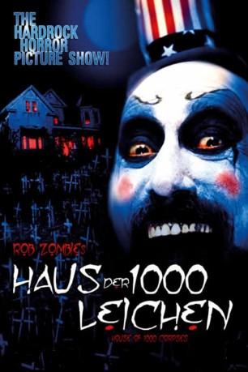

#12001 Das Haus der 1000 Leichen
Alternativ: House of 1000 Corpses (Englischer Titel)
 
 IMDB-Wertung: 6.1 / 10
IMDB-Wertung: 6.1 / 10  Metascore: 31
Metascore: 31 
Zwei junge Paare auf der Suche nach dem ultimativen Kick reisen durch das amerikanische Hinterland, um der Legende vom Serienkiller Dr. Satan auf die Spur zu kommen. In einer gottverlassenen Kleinstadt treffen sie auf den geheimnisvollen Captain Spaulding, der den Teenagern auf einer Geisterbahnfahrt durch sein bizarres Kuriositätenkabinett der Grausamkeiten allerhand über Dr. Satan erzählt. Wegen einer Autopanne auf ihrer Weiterfahrt suchen sie Hilfe in einem nahegelegenen Haus. Dort treffen sie auf eine Familie, die sich noch während des gemeinsamen Halloween-Mitternachtsgelages als ein mordlustiger Psychopathenclan entpuppt.
Jahr: 2003
Dauer: 88 Minuten
FSK: 18
Land: USA Studio: Lions Gate FilmsTonspuren:
Untertitel:
Auflösung: 1080p (1920x1080) Größe: 7280 MB
Genre: Horror
Regisseur:  Rob Zombie
Rob Zombie
Drehbuch: Rob Zombie
Soundtrack: Scott Humphrey, Rob Zombie
Darsteller:
 William Bassett als Sheriff Frank Huston
William Bassett als Sheriff Frank Huston Karen Black als Mother Firefly
Karen Black als Mother Firefly- Erin Daniels als Denise Willis
 Judith Drake als Skunk Ape Wife
Judith Drake als Skunk Ape Wife- Dennis Fimple als Grampa Hugo
- Gregg Gibbs als Dr. Wolfenstein
 Walton Goggins als Steve Naish
Walton Goggins als Steve Naish Sid Haig als Captain Spaulding
Sid Haig als Captain Spaulding- Chris Hardwick als Jerry Goldsmith
- Jennifer Jostyn als Mary Knowles
 Irwin Keyes als Ravelli
Irwin Keyes als Ravelli Matthew McGrory als Tiny Firefly
Matthew McGrory als Tiny Firefly Jake McKinnon als The Professor
Jake McKinnon als The Professor- Sheri Moon Zombie als Baby Firefly
 Bill Moseley als Otis
Bill Moseley als Otis- Robert Allen Mukes als Rufus
- Walter Phelan als Dr. Satan
 Michael J. Pollard als Stucky
Michael J. Pollard als Stucky- David Reynolds als Richard Wick
 Tom Towles als Deputy George Wydell
Tom Towles als Deputy George Wydell Rainn Wilson als Bill Hudley
Rainn Wilson als Bill Hudley- Harrison Young als Don Willis
- Johnny Hoops als Mental Patient (uncredited)
- Samantha Larsen als Sex slave (uncredited)
- Freddy Waff als Mental Patient (uncredited)
- Rob Zombie als Dr. Wolfenstein's assistant (uncredited)
- Chad Bannon als Killer Karl
- Joe Dobbs III als Gerry Ober
- Ken Johnson als Skunk Ape Husband
- Irvin Mosley Jr. als Lewis Dover
- Bob Pepper als Tow Truck Driver (uncredited)
Datei: X:\NEU\Haus der 1000 Leichen, Das (2003, FSK18, 1920x1080).mkv seit 04.11.2019
 Es gibt insgesamt 187 Filme in der Gruppe 'NEU'
Es gibt insgesamt 187 Filme in der Gruppe 'NEU'